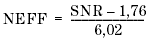

Calculation of Distortion Parameters
The digital ADC response is captured into the digital capture memory. A FFT transformation is performed to obtain the frequency spectrum of the ADC response.
To calculate the various distortion characteristics the same formulas are used as for the DAC distortion characteristics. For further information see DAC Tests.
NEFF (Number of EFFective bits) is calculated as follows:

SNR is the Signal to Noise ratio.